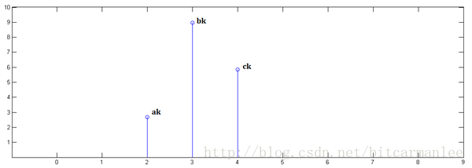

1.知乎上排名最高的解釋
首先選取知乎上對卷積物理意義解答排名最靠前的回答。
不推薦用“反轉/翻轉/反褶/對稱”等解釋卷積。好好的信號爲什麼要翻轉？導致學生難以理解卷積的物理意義。
這個其實非常簡單的概念，國內的大多數教材卻沒有講透。
直接看圖，不信看不懂。以離散信號爲例，連續信號同理。
已知x[0] = a, x[1] = b, x[2]=c
已知y[0] = i, y[1] = j, y[2]=k
下面通過演示求x[n] * y[n]的過程，揭示卷積的物理意義。
第一步，x[n]乘以y[0]並平移到位置0：
第二步，x[n]乘以y[1]並平移到位置1
第三步，x[n]乘以y[2]並平移到位置2：

最後，把上面三個圖疊加，就得到了x[n] * y[n]：
簡單吧？無非是平移（沒有反褶！）、疊加。
從這裏，可以看到卷積的重要的物理意義是：一個函數（如：單位響應）在另一個函數（如：輸入信號）上的加權疊加。
重複一遍，這就是卷積的意義：加權疊加。
對於線性時不變系統，如果知道該系統的單位響應，那麼將單位響應和輸入信號求卷積，就相當於把輸入信號的各個時間點的單位響應 加權疊加，就直接得到了輸出信號。
通俗的說：
在輸入信號的每個位置，疊加一個單位響應，就得到了輸出信號。
這正是單位響應是如此重要的原因。
在輸入信號的每個位置，疊加一個單位響應，就得到了輸出信號。
這正是單位響應是如此重要的原因。
在輸入信號的每個位置，疊加一個單位響應，就得到了輸出信號。
這正是單位響應是如此重要的原因。
以上是知乎上排名最高的回答。比較簡單易懂。
有個回覆也可以參考：
樓主這種做法和通常教材上的區別在於：書上先反褶再平移，把輸入信號當作一個整體，一次算出一個時間點的響應值；而樓主把信號拆開，一次算出一個信號在所有時間的響應值，再把各個信號相加。兩者本質上是相同的。
2.卷積的另外解釋
卷積表示爲y(n)=x(n)∗h(n)y(n)=x(n)∗h(n)
使用離散數列來理解卷積會更形象一點，我們把y(n)的序列表示成y(0),y(1),y(2),⋯y(0),y(1),y(2),⋯, 這是系統響應出來的信號。
同理，x(n)x(n)的對應時刻的序列爲x(0),x(1),x(2),⋯x(0),x(1),x(2),⋯
其實我們如果沒有學過信號與系統，就常識來講，系統的響應不僅與當前時刻系統的輸入有關，也跟之前若干時刻的輸入有關，因爲我們可以理解爲這是之前時刻的輸入信號經過一種過程（這種過程可以是遞減，削弱，或其他）對現在時刻系統輸出的影響，那麼顯然，我們計算系統輸出時就必須考慮現在時刻的信號輸入的響應以及之前若干時刻信號輸入的響應之“殘留”影響的一個疊加效果。
假設0時刻系統響應爲y(0)y(0),若其在1時刻時，此種響應未改變，則1時刻的響應就變成了y(0)+y(1)y(0)+y(1),叫序列的累加和（與序列的和不一樣）。但常常系統中不是這樣的，因爲0時刻的響應不太可能在1時刻仍舊未變化，那麼怎麼表述這種變化呢，就通過h(t)這個響應函數與x(0)相乘來表述，表述爲x(m)×h(m−n)x(m)×h(m−n)，具體表達式不用多管，只要記着有大概這種關係，引入這個函數就能夠表述y(0)y(0)在1時刻究竟削弱了多少，然後削弱後的值纔是y(0)y(0)在1時刻的真實值，再通過累加和運算，纔得到真實的系統響應。
再拓展點，某時刻的系統響應往往不一定是由當前時刻和前一時刻這兩個響應決定的，也可能是再加上前前時刻，前前前時刻，前前前前時刻，等等，那麼怎麼約束這個範圍呢，就是通過對h(n)h(n)這個函數在表達式中變化後的h(m−n)h(m−n)中的m的範圍來約束的。即說白了，就是當前時刻的系統響應與多少個之前時刻的響應的“殘留影響”有關。
當考慮這些因素後，就可以描述成一個系統響應了，而這些因素通過一個表達式（卷積）即描述出來不得不說是數學的巧妙和迷人之處了。
3.卷積的數學定義
前面講了這麼多，我們看看教科書上對卷積的數學定義。
4.卷積的應用
用一個模板和一幅圖像進行卷積，對於圖像上的一個點，讓模板的原點和該點重合，然後模板上的點和圖像上對應的點相乘，然後各點的積相加，就得到了該點的卷積值。對圖像上的每個點都這樣處理。由於大多數模板都是對稱的，所以模板不旋轉。卷積是一種積分運算，用來求兩個曲線重疊區域面積。可以看作加權求和，可以用來消除噪聲、特徵增強。
把一個點的像素值用它周圍的點的像素值的加權平均代替。
卷積是一種線性運算,圖像處理中常見的mask運算都是卷積，廣泛應用於圖像濾波。
卷積關係最重要的一種情況，就是在信號與線性系統或數字信號處理中的卷積定理。利用該定理，可以將時間域或空間域中的卷積運算等價爲頻率域的相乘運算，從而利用FFT等快速算法，實現有效的計算，節省運算代價。
5.補充
另外在知乎上看到非常好也非常生動形象的解釋，特意複製粘貼過來。(知乎馬同學的解釋)
從數學上講，卷積就是一種運算。
某種運算，能被定義出來，至少有以下特徵：
1.首先是抽象的、符號化的
2.其次，在生活、科研中，有着廣泛的作用
比如加法：
1.a+b，是抽象的，本身只是一個數學符號
2.在現實中，有非常多的意義，比如增加、合成、旋轉等等
卷積，是我們學習高等數學之後，新接觸的一種運算，因爲涉及到積分、級數，所以看起來覺得很複雜。
這兩個式子有一個共同的特徵：
這個特徵有什麼意義？
只看數學符號，卷積是抽象的，不好理解的，但是，我們可以通過現實中的意義，來習慣卷積這種運算，正如我們小學的時候，學習加減乘除需要各種蘋果、糖果來幫助我們習慣一樣。
我們來看看現實中，這樣的定義有什麼意義。
2 離散卷積的例子：丟骰子
我有兩枚骰子：
把這兩枚骰子都拋出去：
求：兩枚骰子點數加起來爲4的概率是多少?
這裏問題的關鍵是，兩個骰子加起來要等於4，這正是卷積的應用場景。
我們把骰子各個點數出現的概率表示出來：
那麼，兩枚骰子點數加起來爲4的情況有：
因此，兩枚骰子點數加起來爲4的概率爲：
f(1)g(3)+f(2)g(2)+f(3)g(1)
符合卷積的定義，把它寫成標準的形式就是：
(f∗g)(4)=∑m=13f(4−m)g(m)(f∗g)(4)=∑m=13f(4−m)g(m)
3 連續卷積的例子：做饅頭
樓下早點鋪子生意太好了，供不應求，就買了一臺機器，不斷的生產饅頭。
假設饅頭的生產速度是 f(t) ，那麼一天後生產出來的饅頭總量爲：
∫240f(t)dt∫024f(t)dt
饅頭生產出來之後，就會慢慢腐敗，假設腐敗函數爲 g(t) ，比如，10個饅頭，24小時會腐敗：
10∗g(t)10∗g(t)
想想就知道，第一個小時生產出來的饅頭，一天後會經歷24小時的腐敗，第二個小時生產出來的饅頭，一天後會經歷23小時的腐敗。
如此，我們可以知道，一天後，饅頭總共腐敗了：
∫240f(t)g(24−t)dt∫024f(t)g(24−t)dt
這就是連續的卷積。
4 圖像處理
4.1 原理
有這麼一副圖像，可以看到，圖像上有很多噪點：
高頻信號，就好像平地聳立的山峯：
看起來很顯眼。
平滑這座山峯的辦法之一就是，把山峯刨掉一些土，填到山峯周圍去。用數學的話來說，就是把山峯周圍的高度平均一下。
平滑後得到：
4.2 計算
卷積可以幫助實現這個平滑算法。
有噪點的原圖，可以把它轉爲一個矩陣：
然後用下面這個平均矩陣（說明下，原圖的處理實際上用的是正態分佈矩陣，這裏爲了簡單，就用了算術平均矩陣）來平滑圖像：
g=⎡⎣⎢⎢191919191919191919⎤⎦⎥⎥g=[191919191919191919]
記得剛纔說過的算法，把高頻信號與周圍的數值平均一下就可以平滑山峯。
比如我要平滑a1,1a1,1 點，就在矩陣中，取出a1,1a1,1點附近的點組成矩陣 f ,和 g 進行卷積計算後，再填回去
要注意一點，爲了運用卷積， g 雖然和 f 同維度，但下標有點不一樣：
寫成卷積公式就是：
(f∗g)(1,1)=∑k=02∑h=02f(h,k)g(1−h,1−k)(f∗g)(1,1)=∑k=02∑h=02f(h,k)g(1−h,1−k)
要求c4,5c4,5，一樣可以套用上面的卷積公式。
這樣相當於實現了 g 這個矩陣在原來圖像上的划動（準確來說，下面這幅圖把 g 矩陣旋轉了180∘180∘ ）：
6.另外一個關於卷積的有意思的解釋
看了好多關於卷積的答案，看到這個例子才徹底地理解了這個過程～
關於卷積的一個血腥的講解
比如說你的老闆命令你幹活，你卻到樓下打檯球去了，後來被老闆發現，他非常氣憤，扇了你一巴掌（注意，這就是輸入信號，脈衝），於是你的臉上會漸漸地（賤賤地）鼓起來一個包，你的臉就是一個系統，而鼓起來的包就是你的臉對巴掌的響應，好，這樣就和信號系統建立起來意義對應的聯繫。下面還需要一些假設來保證論證的嚴謹：假定你的臉是線性時不變系統，也就是說，無論什麼時候老闆打你一巴掌，打在你臉的同一位置（這似乎要求你的臉足夠光滑，如果你說你長了很多青春痘，甚至整個臉皮處處連續處處不可導，那難度太大了，我就無話可說了哈哈），你的臉上總是會在相同的時間間隔內鼓起來一個相同高度的包來，並且假定以鼓起來的包的大小作爲系統輸出。好了，那麼，下面可以進入核心內容——卷積了！
如果你每天都到地下去打檯球，那麼老闆每天都要扇你一巴掌，不過當老闆打你一巴掌後，你5分鐘就消腫了，所以時間長了，你甚至就適應這種生活了……如果有一天，老闆忍無可忍，以0.5秒的間隔開始不間斷的扇你的過程，這樣問題就來了，第一次扇你鼓起來的包還沒消腫，第二個巴掌就來了，你臉上的包就可能鼓起來兩倍高，老闆不斷扇你，脈衝不斷作用在你臉上，效果不斷疊加了，這樣這些效果就可以求和了，結果就是你臉上的包的高度隨時間變化的一個函數了（注意理解）；如果老闆再狠一點，頻率越來越高，以至於你都辨別不清時間間隔了，那麼，求和就變成積分了。可以這樣理解，在這個過程中的某一固定的時刻，你的臉上的包的鼓起程度和什麼有關呢？和之前每次打你都有關！但是各次的貢獻是不一樣的，越早打的巴掌，貢獻越小，所以這就是說，某一時刻的輸出是之前很多次輸入乘以各自的衰減係數之後的疊加而形成某一點的輸出，然後再把不同時刻的輸出點放在一起，形成一個函數，這就是卷積，卷積之後的函數就是你臉上的包的大小隨時間變化的函數。本來你的包幾分鐘就可以消腫，可是如果連續打，幾個小時也消不了腫了，這難道不是一種平滑過程麼？反映到劍橋大學的公式上，f(a)就是第a個巴掌，g(x-a)就是第a個巴掌在x時刻的作用程度，乘起來再疊加就ok了，大家說是不是這個道理呢？我想這個例子已經非常形象了，你對卷積有了更加具體深刻的瞭解了嗎？
參考資料：
1.https://www.zhihu.com/question/22298352
2.http://blog.csdn.net/yeeman/article/details/6325693
3.http://muchong.com/html/201001/1773707.html
4.https://www.zhihu.com/question/39753115
5.https://zh.wikipedia.org/wiki/%E5%8D%B7%E7%A7%AF%E7%A5%9E%E7%BB%8F%E7%BD%91%E7%BB%9C
6.http://blog.csdn.net/tiandijun/article/details/40080823
7.https://zh.wikipedia.org/wiki/%E5%8D%B7%E7%A7%AF%E5%AE%9A%E7%90%86
8.https://www.zhihu.com/question/19714540/answer/14738630 如何理解傅里葉變換公式？
--------------------- 本文來自 bitcarmanlee 的CSDN 博客 ，全文地址請點擊：https://blog.csdn.net/bitcarmanlee/article/details/54729807?utm_source=copy